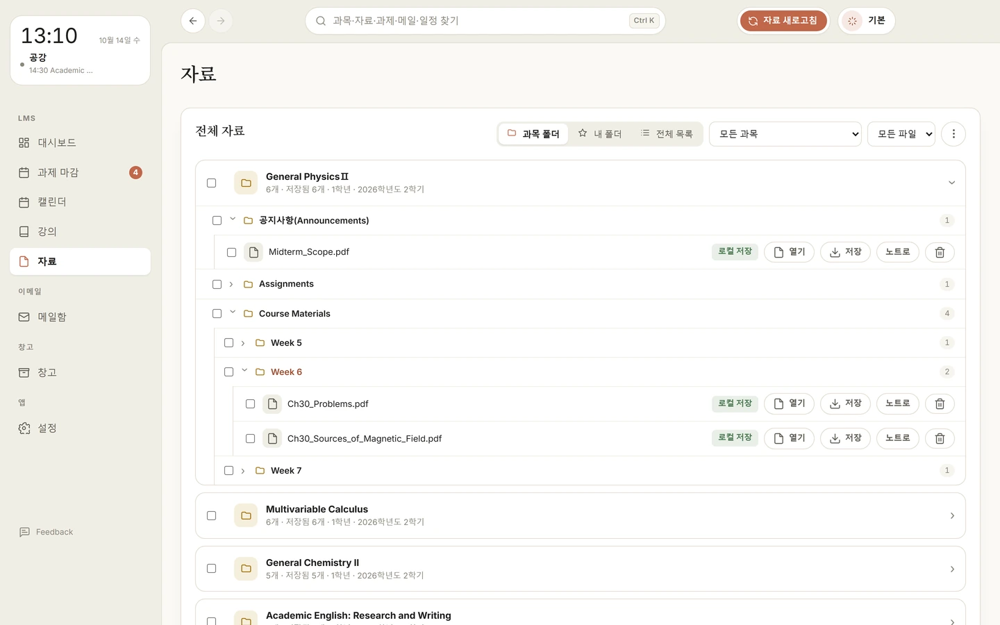
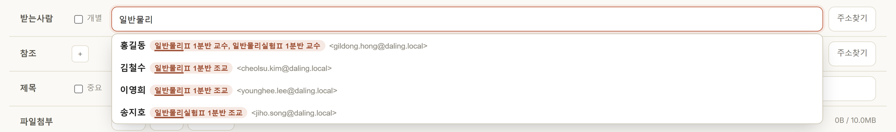
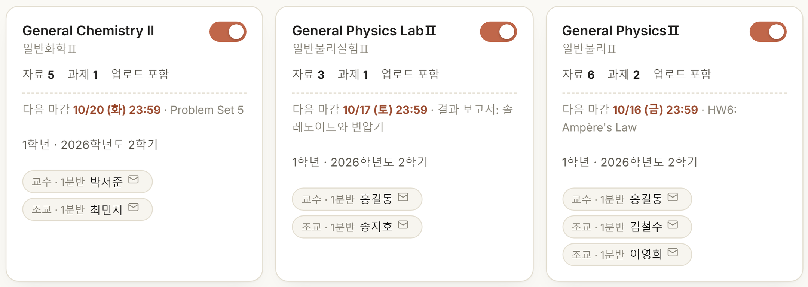

대시보드 · 과제 마감
오늘 할 일과 마감이 먼저 보여요
첫 화면에 오늘 남은 수업, 7일 안에 끝나는 과제, 안 읽은 메일이 한 줄로 나옵니다. 모든 과목의 과제는 D-day 순으로 한 목록에 모입니다.
- 미제출 과제는 '제출하러 가기'로 LMS 제출 화면을 바로 열기
- 시험·수강신청 같은 학사일정 D-day와 주간 시간표
- 시간표는 에브리타임 링크나 시간표 사진으로 가져오기

왜 만들었나요
강의자료와 과제는 LMS에서, 행사와 행정 안내는 웹메일에서, 시험·수강신청 날짜는 학사일정에서, 장학·채용 소식은 학교 공지에서. 로그인도 따로, 확인도 따로라 마감과 공지를 놓치기 쉽습니다.


기능
한 번 로그인해 두면 Daling이 정해진 주기마다 LMS와 학교 메일을 확인해 새로 생긴 것만 가져옵니다.
대시보드 · 과제 마감
첫 화면에 오늘 남은 수업, 7일 안에 끝나는 과제, 안 읽은 메일이 한 줄로 나옵니다. 모든 과목의 과제는 D-day 순으로 한 목록에 모입니다.
강의자료
새로 올라온 강의자료를 찾아 내려받고, LMS에 올라온 주차·강의 폴더 구조 그대로 정리합니다.

학교 메일
웹메일에 따로 로그인하지 않아도 받은 메일을 바로 보고 답장할 수 있어요. 메일은 내용에 따라 알아서 나뉩니다.

캘린더
과제 마감, 학사일정, 공휴일, 내 일정을 한 달력에 모읍니다. 메일에 적힌 행사·세미나 날짜도 읽어서 넣어 줍니다.

꿀기능
LMS와 웹메일을 따로 쓸 때는 할 수 없던 일들입니다.
메일 쓰기
받는 사람 칸에 '일반물리'만 쳐도 그 과목 교수와 조교가 분반과 함께 나옵니다. 조교 이메일을 LMS 공지에서 찾아 헤매지 않아도 됩니다.

강의
LMS에서 이번 학기 교수·조교를 모아 과목 카드에 붙여 둡니다. 이름 옆 편지 아이콘을 누르면 받는 사람과 '[과목 01분반]' 제목이 채워진 메일 쓰기가 열립니다.

그 밖에도
왜 편한가요
5분마다
메일은 5분, 과제 마감은 1시간, 강의자료는 3시간마다 확인합니다. 주기는 설정에서 바꿀 수 있어요.
1곳에서
자료는 과목·주차별로, 메일은 분류별로 정리돼 있고, 검색창 하나로 전부 찾을 수 있습니다.
0번 옮기기
Drive 업로드, 캘린더 등록, 내 컴퓨터 폴더 정리를 손으로 하지 않아도 됩니다.
시작하기
Windows는 설치 파일을 실행하고, Mac은 DMG를 열어 Daling을 응용 프로그램 폴더로 끌어 놓으세요.
설정에서 LMS와 학교 메일 계정을 넣습니다. 비밀번호는 이 컴퓨터에만 암호화해 둡니다.
Drive와 Calendar로 보내고 싶을 때만 연결하세요. 연결하지 않아도 앱은 그대로 씁니다.
처음 켜면 달구가 화면을 안내해 줘요. 그 뒤로는 켜 두기만 하면 새 자료와 메일이 모입니다.
개인정보
Daling에는 개발자가 운영하는 서버가 없습니다. 자료와 계정 정보는 이용자의 컴퓨터에만 저장되고 개발자에게 전송되지 않습니다.
drive.file앱이 만든 과목·주차 폴더에 강의자료를 올리고, 이미 올린 파일인지 확인합니다. 앱이 만들지 않은 Drive 파일은 볼 수 없습니다.
calendar앱 전용 캘린더를 하나 만들어 과제 마감·학사일정·메일 속 일정을 넣고 고칩니다. 앱이 만들지 않은 일정은 건드리지 않습니다.
DGIST LMS·메일(학교 계정으로 로그인), 학교 홈페이지·공공데이터(공개 정보), 새 버전 확인(GitHub). Google에서 받은 정보는 광고나 AI 학습에 쓰지 않습니다.
내려받기
오픈 소스(Apache License 2.0)로 공개된 무료 앱입니다.
Windows 10·11 (64비트) · 설치 파일(.exe)
Windows용 내려받기버전 1.12.21 · 57MB
Apple Silicon(M1 이상) Mac · macOS 12 이상 · 디스크 이미지(.dmg)
Mac용 내려받기버전 1.12.21 · 77MB
지금 베타에서는 Google Drive·Calendar 연결이 아직 안 됩니다. 다음 빌드에서 열립니다.
자주 묻는 질문
네. 광고도 결제도 없는 무료 앱이고, 소스 코드도 공개되어 있습니다.
아니요. DGIST 학생이 쓰려고 만든 비공식 앱이며, DGIST가 만들거나 운영하는 서비스가 아닙니다. 중요한 마감과 공지는 LMS와 학교 공식 채널에서도 꼭 확인하세요.
아니요. 비밀번호는 이용자 컴퓨터에만 암호화해 저장되고(Windows DPAPI, macOS 키체인) 어디로도 전송되지 않습니다. 앱은 학교 서버(LMS·메일)에 직접 로그인합니다.
강의자료를 내 Drive에 올리고(앱이 만든 파일에만 접근하는 drive.file), 마감과 행사를 내 Calendar에 넣기 위해서입니다. 연결은 선택이며, Google 계정의 서드 파티 연결에서 언제든 해제할 수 있습니다.
인터넷에서 받은 앱에 붙는 격리 표시 때문입니다. 터미널에서 xattr -dr com.apple.quarantine /Applications/Daling.app 을 실행한 뒤 다시 열어 보세요.
아니요. 받은 자료와 설정은 데이터 폴더(Windows C:\lms-autosaver, Mac ~/.lms-autosaver)에 남습니다. 필요 없으면 그 폴더를 지우면 됩니다.
앱 왼쪽 아래의 '문의 · 제보' 버튼이나 tutleblue12@gmail.com으로 보내 주세요.
Daling is a free, open-source desktop app for Windows and macOS made for DGIST students. It collects course materials and assignment deadlines from the DGIST LMS, school e-mail, the academic calendar and campus notices into one dashboard, and organizes them into the user's own Google Drive and Google Calendar.
The app runs entirely on the user's computer. There is no developer-operated server, and no user data or credentials are ever sent to the developer.
drive.file) — uploads course materials into course/week folders the app creates, and checks whether a file was already uploaded. The app cannot see Drive files it did not create.calendar) — creates one dedicated calendar and adds or updates assignment deadlines, academic-calendar events and dates found in school e-mail there. It does not change events it did not create.Google user data is used only on the user's computer to provide these features; it is not sold, shared, used for advertising, or used to train AI models. Read the Privacy Policy and Terms of Service. Contact: tutleblue12@gmail.com